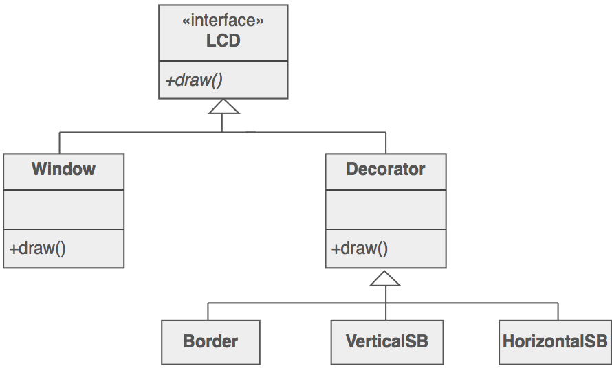
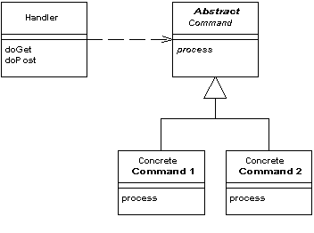
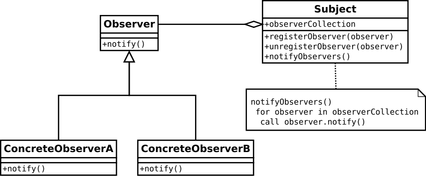

Design patterns
(part 2)
Lesson 12
Design patterns
Classificazione
- creazionali
- strutturali
- comportamentali
Structural patterns
- Decorator
- Adapter
- Façade
- Proxy
- Front controller
Semplificano la progettazione identificando topologie di relazioni tra oggetti.
Structural patterns
Decorator
- Problema: aggiungere (una o più) funzionalità ad un oggetto, senza modificare tutti gli oggetti della stessa classe.
- Problema: aggiungere (una o più) funzionalità ad un oggetto dinamicamente (a run-time).
Potrei utilizzare delle sottoclassi per ogni nuova funzionalità..
Structural patterns
Decorator
.. ma dovrei comprendere tutte le possibili combinazioni!
Structural patterns
Decorator
- Soluzione: un decoratore per funzionalità, ed impacchetto (wrapping) l'oggetto con uno o più decoratori.

Structural patterns
Decorator
$window = new BorderDecorator(
new HorizontalScrollBarDecorator(
new VerticalScrollBarDecorator(
new Window( 80, 24 )
)
)
);
$window->draw();
Structural patterns
Adapter
- Problema: riutilizzare un componente "incompatibile" con una nuova interfaccia.
- Soluzione: impacchetto il componente con un "traduttore" per la nuova interfaccia.
Structural patterns
Adapter
Structural patterns
Façade
- Problema: riutilizzare uno o più componenti (complessi) che non presentano un'interfaccia.
- Soluzione: creo una interfaccia che incapsula il componente (SPA).

Structural patterns
Façade
- violazione di interface segregation e single responsibility
- creo un'interfaccia che prima non esisteva
- collego componenti scorrelati tra loro
- produce a simpler interface vs design to an existing interface
Structural patterns
Proxy
- Problema: instanziare un oggetto solamente se (e quando) viene effettivamente utilizzato.
- Problema: nascondere alcune parti o funzioni di un oggetto.
- Soluzione: delego le funzionalità ad un "agente" che condivide l'interfaccia con l'oggetto.
Structural patterns
Proxy

L'interfaccia fa in modo che il Proxy e l'oggetto originale siano interscambiabili: posso utilizzare una Factory per decidere quale dei due utilizzare.
Structural patterns
Front controller
- Specifico per applicazioni web
- Fornisce un unico punto di ingresso per le richieste
- Esegue tutti i task comuni (sessioni, cache, input filtering)
- Instanzia e richiama gli oggetti che gestiscono successivamente la specifica richiesta
Structural patterns
Front controller

Behavioral patterns
- Iterator
- Mediator
- Observer
- Chain-of-responsibility
- Strategy / Template method
Rappresentano strategie di comunicazione tra differenti oggetti, esponendo le responsabilità di ciascun oggetto.
Coupling
Misura l'interdipendenza tra gli oggetti: tight coupling = minore riusabilità (e testabilità)
Behavioral patterns
Iterator
- Problema: "attraversare" una collezione di oggetti, indipendentemente dalla struttura dati.
Generic programming: separare l'algoritmo dalla struttura dati.
Behavioral patterns
Mediator
- Problema: molti oggetti che comunicano - e dipendono - tra loro.

Behavioral patterns
Mediator
Gli oggetti non parlano tra loro ma solo col mediatore

Behavioral patterns
Observer
- Problema: un oggetto dovrebbe cambiare stato quando un altro oggetto cambia stato.

Behavioral patterns
Observer
- il primo soggetto deve solo notificare il suo cambiamento
- l'observer decide se il cambiamento interessa a qualcun'altro (pull vs push)
- implementa meccanismo publish - subscribe
Behavioral patterns
Chain-of-responsibility
Gestisce il flusso del processo tra gli oggetti
Ogni Handler può gestire il messaggio o passarlo al successivo
Behavioral patterns
Strategy / Template method
Determina l'algoritmo a run-time

Behavioral patterns
Strategy / Template method
Alternativamente con "pseudo codice"
/